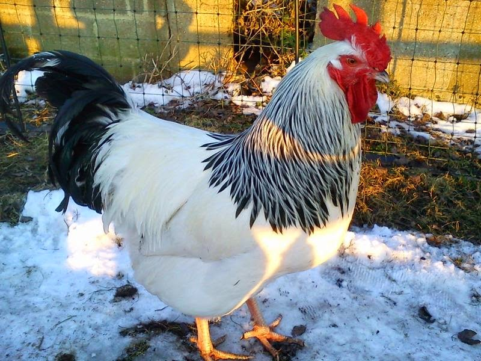

MEAT PRODUCERS: These are breeds that are reared solely for
meat production; they are heavy breeds with a
relatievly larger size.
Examples are;
Sussex

Sussex chicken is a soft-feathered, docile chicken breed.
Although they have the ability to produce eggs, they are
mainly used for meat production.
Cornish Cross Broilers
Cornish Cross Broilers are the most efficient meat chickens
of all the meat breed chickens; they are fast growing chicken
breed with good feed conversion ratio; they have the ability
to mature within 8 weeks.